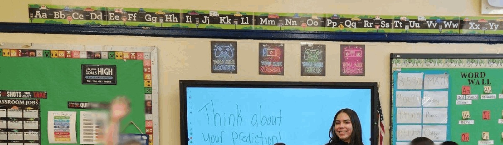
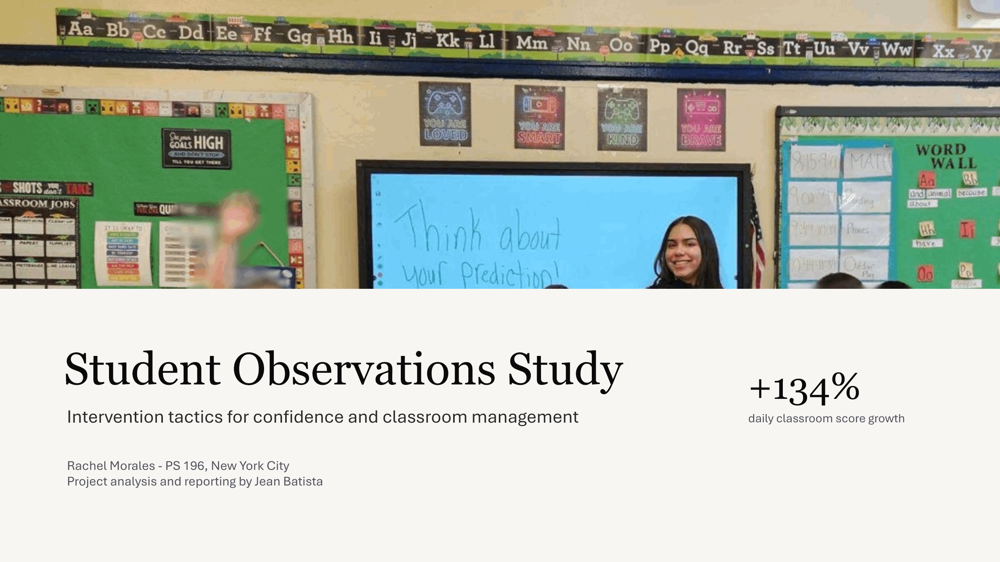
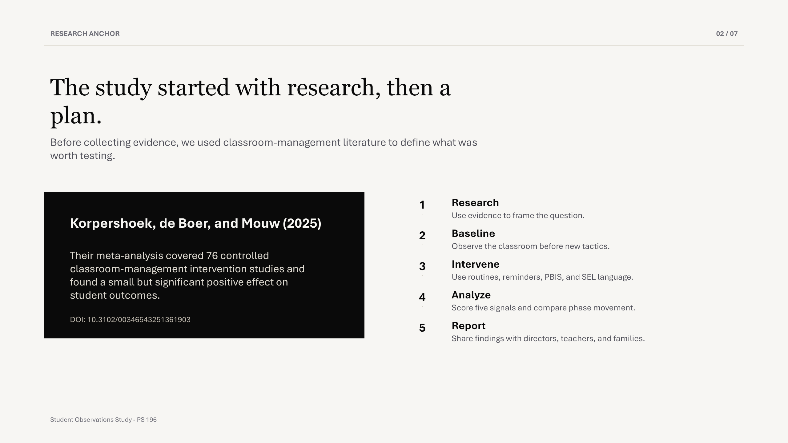
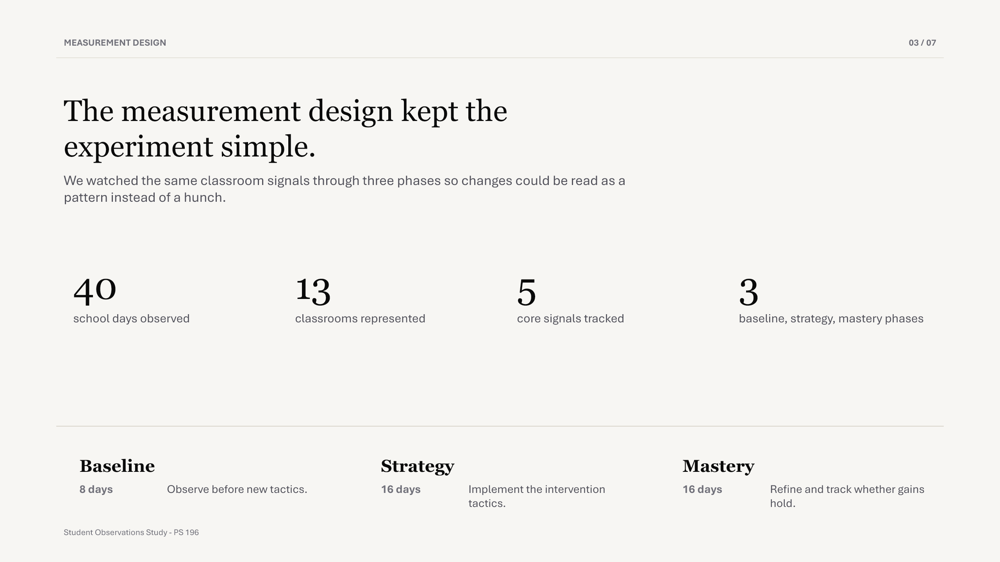
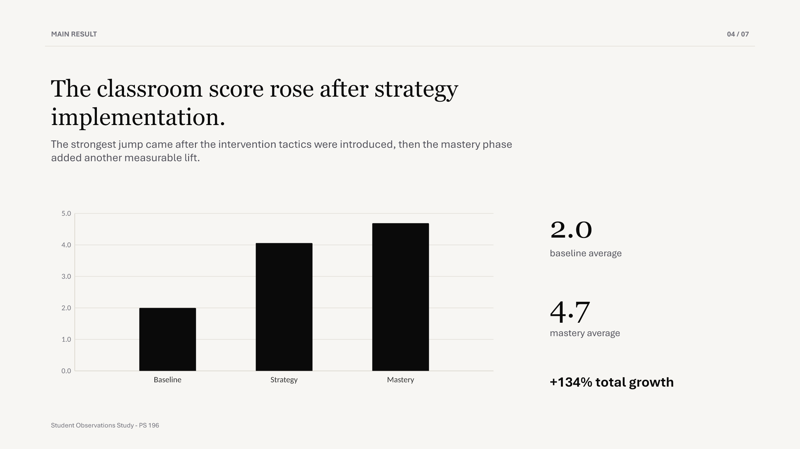
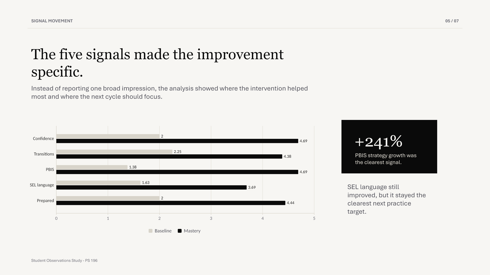
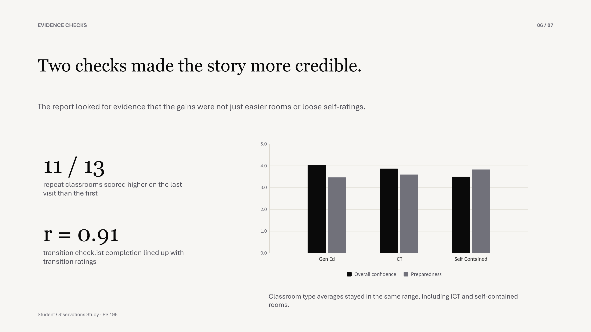
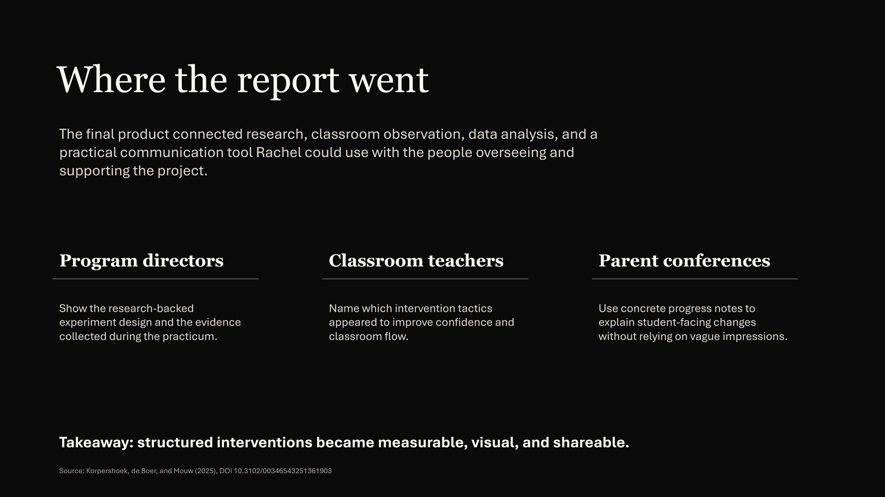

1
Research
Use the article to frame why intervention tactics were worth testing and what kind of classroom change would matter.

A research-backed classroom intervention study for Rachel Morales, built to measure whether specific tactics improved confidence, engagement, and classroom management over time.
Rachel Morales was completing a childhood development practicum at PS 196. The project goal was to observe the results of implementing intervention tactics, not just describe the classroom from memory.
We used Korpershoek, de Boer, and Mouw's 2025 meta-analysis as the research anchor. The article reviewed 76 controlled classroom-management intervention studies and found a small but significant positive effect, which gave the project a clear research basis before the baseline observations began.
Research citation ->Use the article to frame why intervention tactics were worth testing and what kind of classroom change would matter.
Collect classroom observations before changing the routine so the project has a real starting point.
Introduce specific tactics, including clearer expectations, routines, proactive reminders, PBIS praise, and SEL language.
Keep taking notes on the same signals over time so the study can separate a one-day improvement from a pattern.
Convert observations into variables, group records by phase, and prepare the workbook for analysis.
Replace dense tables with concise charts that show phase movement, signal growth, and evidence checks.
Connect the classroom results to the intervention literature and finish a report that explains what changed.
Prepare the findings for program directors, teachers, and parent-teacher conferences as concrete progress notes.
Average daily score, out of 5. Strategy implementation produced the largest jump; mastery added another measurable gain.
PBIS strategy use showed the sharpest growth. SEL language improved too, but remained the clearest next practice target.
repeat classrooms scored higher on the last visit than the first.
transition checklist completion lined up with transition ratings.
preparedness checklist completion lined up with preparedness ratings.
The original long slideshow was rebuilt into seven slides with a cover, research plan, measurement design, concise charts, evidence checks, and report outcomes.






